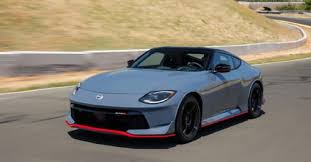

Nissan was founded in 1933 in Japan. Over the decades, the company expanded globally and became a trusted name in the automotive industry.
From small city cars to high-performance sports cars, Nissan’s journey represents growth, innovation, and engineering excellence.
→ Efficiency
→ Safety
→ Smart Technology
→ Sustainable Mobility
Nissan develops features like ProPILOT Assist, advanced driver safety systems, and cutting-edge engine designs to make driving smarter and safer.Nissan is one of the pioneers in electric vehicle (EV) technology. The Nissan LEAF, introduced in 2010, became one of the world’s best-selling electric cars.
Nissan continues to invest in:→ Battery improvement
→ Charging solutions
→ Eco-friendly driving systems
This commitment demonstrates their vision for a cleaner, greener future.While Nissan builds family-friendly and economical cars, it is also known for its legendary sports cars.
Highlights include:
→ Nissan Skyline
→ Nissan Z Series
→ Nissan GT-R (Godzilla)

The GT-R, in particular, is famous for its incredible acceleration, engineering precision, and motorsport influence.
Nissan vehicles are sold worldwide and are known for:
→ Durability
→ Fuel efficiency
→ Affordable maintenance
Millions of drivers trust Nissan for daily commuting, adventure, and performance.